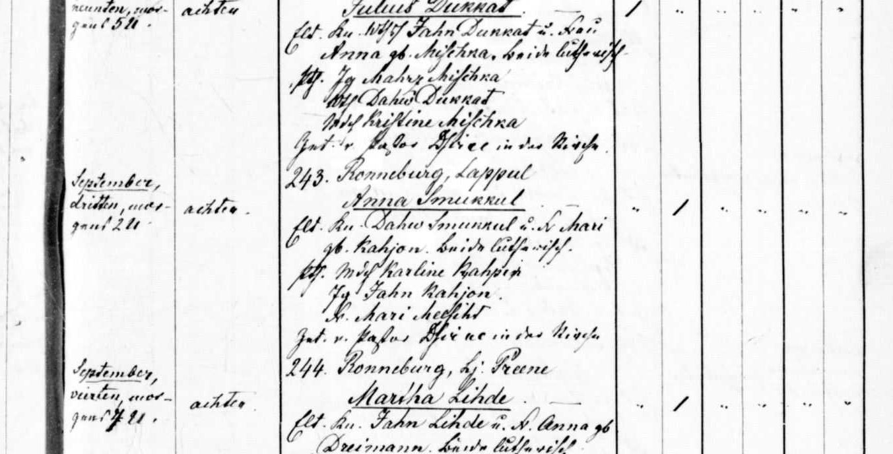

Anna Smukule b. 1889
Peter's great-great-aunt.
Also recorded as Anna Smukkul (1889 baptism); Anna Smukul (1912 godmother).
Anna Smukule was born on 15 Sep 1889 in Rauna, Cēsis district, Vidzeme, Latvia1, the daughter of Dāvis Smukuls and Marija Kajone1.
Family
- Parents
- Dāvis Smukuls and Marija Kajone documented
Life events
| Event | Date | Place and details |
|---|---|---|
| Born | 15 Sep 1889 | Rauna, Cēsis district, Vidzeme, Latvia Old Style (Julian) date: 3 Sep 18891 |
| Baptised | 20 Sep 1889 | Rauna, Cēsis district, Vidzeme, Latvia Old Style (Julian) date: 8 Sep 18891 |
Records

Open questions
Sources
- Rauna births 1889 no. 243, LVVA f. 235, apr. 7, l. 517, img 432 (right page), LVVA f. 235, apr. 7, l. 517, image 432.
September, dritten, morgens 2 U. | achten. | 243. Ronneburg, Lappul. Anna Smukkul. Elt. Kn. Dahw Smukkul u. W. Mari gb. Kahjon, beide lutherisch. Pth. Mch. Karline Kahjon, Jg. Jahn Kahjon, W. Mari Meesiht. Get. v. Pastor Dsirne in der Kirche.
Translation: Born 3 September, 2 a.m.; baptised 8th. No. 243. Rauna, Lapuļi. Anna Smukkul. Parents: farmhand Dāvis Smukkul and wife Mari née Kahjon, both Lutheran. Godparents: maiden Karlīne Kahjon, bachelor Jānis Kahjon, wife Mari Meesiht. Baptised by Pastor Dsirne in the church.
Born 3 Sep 1889 at 2 a.m. (Julian; 15 Sep 1889 Gregorian), baptised 8 Sep 1889 by Pastor Dsirne in the church. Legitimate daughter of 'Kn. Dahw Smukkul u. W. Mari gb. Kahjon, beide lutherisch' (farmhand Dāvis Smukulis and wife Marija née Kajons, married 28 Oct 1884 in Rauna, 1884 no. 42). Godparents: 'Mch. Karline Kahjon, Jg. Jahn Kahjon, W. Mari Meesiht'. Younger full biological sister of Emma Smukkul (b. 25 Dec 1885 Jul. = 6 Jan 1886 Greg. at Lubar, Lj: Luhzmann, 1886 no. 33, to the same parents 'Kn. Dahw Smukkul u. W. Marie geb. Kahjon', with Meesiht godparents 'Md. Juhle Meesiht' and 'Jg. August Meesiht'); by Sep 1889 the family had moved from Lubāra (Lūcmaņi) to Rauna manor's Lapuļi farm (where Wth. Peter Kahjon × Anna geb. Mise also lived in 1886–1890). Crucially, at the baptism of Emma Smukule and Mārtiņš Vilhelms Sirlaks's daughter Elvīra Antonija Sirlaka on 19 Feb 1912 (Rīga St Martin 1912 no. 82), the godmother from the mother's side was 'Anna Smukul' — Emma's younger full sister Anna (b. Sep 1889, age 22 in Feb 1912).